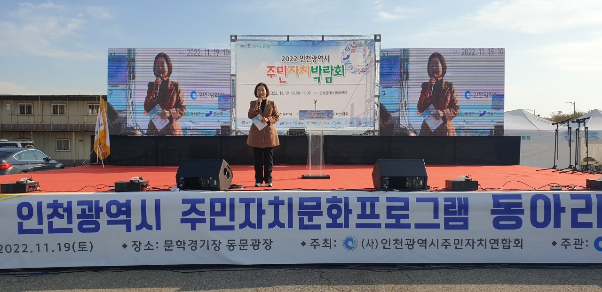

인천 주민자치박람회 7일 월미도…주민자치회 법제화 뒤 첫 한마당
11개 군·구 체제 첫 행사, 4000여 명 참여 예정
AI경제저널=김갑봉 기자 | 인천 158개 읍·면·동의 주민자치위원들이 7일 월미도에 모인다. 인천시는 이날 월미도 문화의 거리에서 「2026 인천광역시 주민자치박람회」를 연다고 5일 밝혔다. 행정체제 개편으로 11개 군·구 체제가 출범한 뒤 처음 열리는 박람회다.

군·구별 우수사례 전시와 두 경연대회
주제는 「주민이 주인 되는 인천, 자치로 하나 되는 우리」다. 인천시가 주최하고 인천광역시 주민자치연합회(회장 박영규)가 주관한다. 시는 주민자치위원과 시민 4000여 명이 참여할 것으로 내다봤다.
프로그램은 넷이다. 11개 군·구가 주민자치 우수사례와 지역 특산품을 전시한다. 지역 특색 음식 나눔과 주민자치센터 프로그램 체험도 마련한다. 주민자치회 추진사업 우수사례 경진대회와 주민자치센터 동아리 경연대회도 함께 열린다.
박찬대 인천시장은 이번 박람회가 "주민들이 지역사회에 대해 더 깊이 고민하며 실질적인 변화를 이끌어내는 계기가 되기를 바란다"고 말했다.
법에 올라선 주민자치회가 인천에 말하는 것
첫째, 제도의 자리가 바뀌었다. 주민자치회는 그동안 「지방자치분권 및 지역균형발전에 관한 특별법」 제40조에 근거를 둔 시범 제도였다. 올해 4월 14일 공포된 개정 지방자치법이 제17조의2(주민자치회의 설치 등)를 새로 뒀다. 같은 법 부칙은 특별법 제40조를 지웠다. 개정법은 공포 6개월 뒤인 10월 15일부터 시행 중이다.
새 조항은 읍·면·동에 주민자치회를 둘 수 있게 했다. 지방자치단체 사무 일부를 주민자치회에 맡길 수도 있다. 위원은 시장·군수·구청장이 조례에 따라 위촉하는 명예직이다. 국가와 지방자치단체는 운영에 필요한 행정적·재정적 지원을 할 수 있다. 부칙은 특별법에 따라 운영 중인 주민자치회가 새 조항의 요건을 갖추면 새 법의 주민자치회로 본다고 정했다. 이번 박람회는 이 조항이 시행된 뒤 인천에서 처음 열리는 주민자치 한마당이다.
둘째, 군·구와 의회가 할 일이 남았다. 지방자치법은 주민자치회의 구성과 운영, 맡길 업무의 구체적인 사항을 조례로 정하게 했다. 어떤 사무를 맡기고 얼마를 지원할지는 11개 군·구 조례가 정한다. 신설 자치구를 포함한 군·구 의회의 조례 정비가 주민자치회의 실제 권한을 가른다.
셋째, 정치적 중립의 선이 법에 적혔다. 주민자치회는 그 명의로 특정 정당이나 특정인을 지지·반대하는 정치활동을 할 수 없다. 단체장도 정치적 목적이나 개인 이익을 위해 주민자치회 업무에 관여할 수 없다. 위촉된 위원은 지역사회의 봉사자로서 정치적 중립을 지켜야 한다.
넷째, 발표에 없는 숫자다. 이번 발표는 주민자치회 전환 현황을 밝히지 않았다. 시는 2022년 155개 읍·면·동 가운데 141곳이 주민자치회로 시범 전환했다고 밝혔다. 2024년에는 156곳 가운데 142곳이었다. 2024년 박람회 때 예상 참여 인원은 5000여 명이었다. 올해는 읍·면·동이 158곳으로 늘었지만 예상 인원은 4000여 명이다.
2년 만의 박람회, 지난해는 한마음대회
인천 주민자치박람회는 2022년 문학경기장에서 4년 만에 다시 열렸다. 2024년에는 2년 만에 월미도에서 열렸다. 지난해 11월에는 남동체육관에서 제5회 주민자치 한마음대회가 열려 주민자치회원 4600여 명이 참여했다.
행사 문의는 인천시 자치행정과(032-440-3392)가 받는다.
참고문헌
- 인천광역시 자치행정과(2026). 참여와 소통의 축제 한마당, 인천 주민자치박람회 11월 7일 개최(보도자료). 2026년 11월 5일. https://www.incheon.go.kr/IC010205/view?repSeq=DOM_0000000015911328
- 인천광역시 자치행정과(2024). 참여와 소통의 축제 한마당, 인천 주민자치박람회 11월 2일 열린다(보도자료). 2024년 10월 31일. https://www.incheon.go.kr/IC010205/view?repSeq=DOM_0000000011039277
- 인천광역시 자치행정과(2025). 인천시, '제5회 주민자치 한마음대회' 성황리 개최(보도자료). 2025년 11월 16일. https://www.incheon.go.kr/IC010205/view?repSeq=DOM_0000000013533080
- 인천광역시 민간협력과(2022). 인천 주민자치 우수성과 공유하는 박람회 열려(보도자료). 2022년 11월 20일. https://www.incheon.go.kr/IC010205/view?repSeq=DOM_0000000006186904
- 「지방자치법」(법률 제21544호, 2026. 4. 14. 공포, 2026. 10. 15. 시행) 제17조의2, 부칙 제1조~제3조. 국가법령정보센터. https://www.law.go.kr/법령/지방자치법
- 「지방자치분권 및 균형성장에 관한 특별법」(법률 제21544호 타법개정, 2026. 10. 15. 시행) 제40조(삭제 2026. 4. 14.). 국가법령정보센터. https://www.law.go.kr/법령/지방자치분권및지역균형발전에관한특별법
[사진 출처]
- [사진1] 인천광역시 보도자료 「인천 주민자치 우수성과 공유하는 박람회 열려」 사진, 공공누리 제1유형, 2022.11.20., https://www.incheon.go.kr/IC010205/view?repSeq=DOM_0000000006186904
관련기사
- 인천 신설구 100일, 법은 「지원하며」라 썼는데 개편 국비 예산은 두 해째 0원
- [10차 개헌과 지방분권①] 39년 만의 개헌 시도, 지방자치 조항은 그대로였다
- [인구 브리핑] 인구감소지역 주민 1년 새 1만6000명 감소, 외국인은 2만7000명 증가
저작권자 © AI경제저널 무단전재 및 재배포, AI학습 및 활용 금지